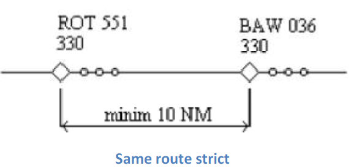

ENROUTE CONTROLLER (CONTROLLER 1)
Radar Separation Inside Bucharest ACC Airspace
General
The minimum horizontal separation is 12 km (6 NM).
In order to enforce minimum horizontal separation, both aircraft must not leave controlled airspace and the separation will apply to both aircraft.
Definitions
Separation is a generic term describing the action taken by air traffic services to maintain a minimum distance between aircraft in order to reduce the risk of collision. Separation is applied horizontally, either longitudinally or laterally, and vertically. Vertical separation is obtained by asking crews of aircraft to use a standard altimeter (QNH) setting to operate at different flight levels or at different altitudes.
Required separation is described as the minimum distance on each axis of the Cartesian system: vertical, longitudinal, and lateral. This is shown in the diagram below:
The Y axis represents longitudinal; the X axis represents lateral and the Z axis represents vertical.
Important
Two aircraft are separated if AT LEAST ONE of these distances is maintained.
Any two aircraft must fall within one of the separation cases to be properly separated.
In the case of lateral separation, the minima are declared as a distance in nautical miles (NM) and also in terms of angular difference measured in degrees. Longitudinal separation is declared in units of time (minutes) and also in units of distance (NM, DME distance, RNAV, ADS). Vertically, the minima are declared in meters and feet or Flight Levels (FL).
Distance between aircraft is measured from the end of the radar plot symbol of the first aircraft and the end of the radar plot of the second aircraft.
Track is the magnetic route of an aircraft.
Cruise flight: An aircraft is in cruise flight if it maintains a
flight level and is on its own navigation.
Parallel Offset: Flight on an offset tracking. The reference track
is considered a respective distance to the right or to the left.
Procedural Control (non-radar): Control based exclusively on
position reports of crews.
Radar Control: Control based on position elements of an aircraft
displayed on a radar screen and where separation is done by maintaining
a specific horizontal distance (longitudinal and/or lateral) between
radar returns on a screen representing the aircraft positions in the
airspace.
Abbreviations
ATCO - Air Traffic Controller Officer
NM - Nautical Miles
Note
Relative tracks:
α - the angle between aircraft tracks
SS - same route strict - α ≤ 10⁰
SA - same route approximate - 10⁰ < α ≤ 20⁰
Minimum Radar Separation in Area Control
Aircraft flying on the same route, in the same direction, in cruise flight
The minimum longitudinal separation between two aircraft flying on the same route, in the same direction, at the same level, in cruise, is 10 NM when:
- The speed of the aircraft in front is greater or at least equal to the speed of the aircraft behind.
- The two aircraft are on the same route i.e. angle (α) between tracks is between 0° and 20°.
- The distance between aircraft is measured as in the diagram below:

The longitudinal separation in cruise flight shall be maintained by using a combination of distance monitoring and speed control. All flights shall be checked to ensure that at least 10 NM separation is maintained at all times, using speed control as required to maintain this.
The minimum lateral separation between two aircraft flying at the same flight level, in cruise flight, on parallel tracks is 10 NM:
For two aircraft in cruise flight, on the same track, traveling in the same direction, at the same level, the flying parallel offset should be laterally separated by a minimum of 10 NM:
This separation may only be used after confirmation from the pilot that the aircraft is properly equipped for parallel offset.
The minimum longitudinal separation between two aircraft flying the same route, in the same direction, climbing or descending, at the moment passing the occupied flight level, is 10 NM:
An occupied flight level is one where the Mode C altitude report on an aircraft shows it is ±300 feet of the assigned flight level, after 3 consecutive radar returns.
This separation is only applicable for flights climbing/descending passing the flight level occupied by an aircraft maintaining that level. The approval to pass through that level will only be granted after the aircraft has occupied a level below or above that aircraft (i.e. FL310 or FL350 in the case above). The ATCO will maintain radar longitudinal separation until the aircraft is properly separated vertically.
Convergence separation
The minimum longitudinal separation of two aircraft flying at the same flight level or in climb/descent at the time passing the occupied flight level, on convergent tracks, is 10 NM
The separation distance is measured relative to the convergence point. Using the diagram above the separation is D2 - D1 (difference between the distances from the convergence point).
If longitudinal separation of 10 NM between distances to the convergence point is not established, then the minimum lateral separation of 10 NM must be established. The lateral distance must be at least 10 NM when the aircraft are already on parallel or convergent tracks.
The lateral distance is measured between the position of the aircraft in front and the track of the following aircraft (see diagram above).
Divergent separation
The minimum lateral separation of aircraft flying divergent routes, after the aircraft has passed the track intersection point, at the same flight level, or in climb/descent at the moment passing the occupied flight level, is 5 NM.
The distance is measured between the aircraft closer to the divergence point and the track of the other aircraft.
This separation may only be used after the pilots report maintaining a fixed heading.
The minimum lateral separation of aircraft flying divergent routes, when one of the aircraft has passed the tracks intersection point, and the other is flying toward the intersection point, in climb/descent at the time of passing the occupied flight level, is 5 NM.
The lateral distance is the distance between the aircraft closest to the divergent point and the track of the other aircraft.
Note
This separation may only be used after the pilots report maintaining a fixed heading
Aircraft on the same route, opposite direction
For aircraft flying the same route, at the same flight level or in climb/descent, in opposite directions, before passing the intersection point, non-radar separation is applicable. The non-radar separation for each aircraft is 10 minutes from the point of intersection as shown in the diagram below:
As this separation is not practical in high traffic situations, the ATCO has the duty to seek alternative separation for aircraft looking to climb/descend or provide vectors for a parallel track separation until vertical separation is established.
For aircraft flying on the same route, in climb/descent, in opposite directions, after it has been observed on the radar screen that the plots have passed each other and it is a fact that the plots won't meet each other again; the minimum longitudinal separation is 5 NM.

Lateral radar separation minima for the time passing occupied flight level
The minimum lateral separation for aircraft on the same route, in the same direction, in climb/descent, at the time of passing the occupied flight level, is 5 NM. Headings assigned and confirmed by aircraft must be parallel or divergent.
The minimum lateral separation or aircraft flying on the same route, in opposite directions, in climb/descent, at the time of passing the occupied flight level, is 5 NM. Headings assigned and confirmed by aircraft must be parallel or divergent.
Vertical separation
Vertical separation with two or more aircraft may be done simultaneously in the following cases:
- Same route, same direction, if double vertical separation is assured and assigns a rate of climb and descent. ATCO must control the positions of the aircraft in the vertical plane to respect the separation required.
- Same route, same direction, and the minimum lateral separation of 5 NM are respected.
- Same route, opposite direction, after passing, if it has been observed on the radar screen that the plots have passed each other and it is ensured that the plots will not meet again and the distance between plots is a minimum of 5 NM.
- Same route, opposite direction, and the minimum lateral separation of 5 NM are respected.
Aircraft in RVSM (Reduced Vertical Separation Minima) airspace are to be separated by a minimum of 1000 feet vertically. Due to the setup of RVSM airspace, aircraft flying in the same direction will be separated by a minimum of 2000 feet and aircraft flying in opposite directions by a minimum of 1000 feet. All aircraft outside of RVSM airspace shall be separated by a minimum of 2000 feet.
Circle of Intersection
The circle of intersection helps to determine if aircraft are on the same route or flying in opposite directions by using the relative tracks of the aircraft.
The relative track is the difference between tracks of two aircraft and defines the movement of aircraft in the horizontal plane.
Note
SAS = Same route strict
AAS = Same route approximate
CA = Sharp convergence
CN = Normal convergence
AC = Approximate convergence
ASC = Opposite direction approximate
SSC = Opposite direction strict
Tip
ROT 551 is flying on track 350° and BAW 036 is flying on track 300°. Therefore, the relative track is: 350° - 300° = 50° [or 300° - 350° = -50°]. From the circle of intersection chart, the two aircraft are normal convergence (CN).